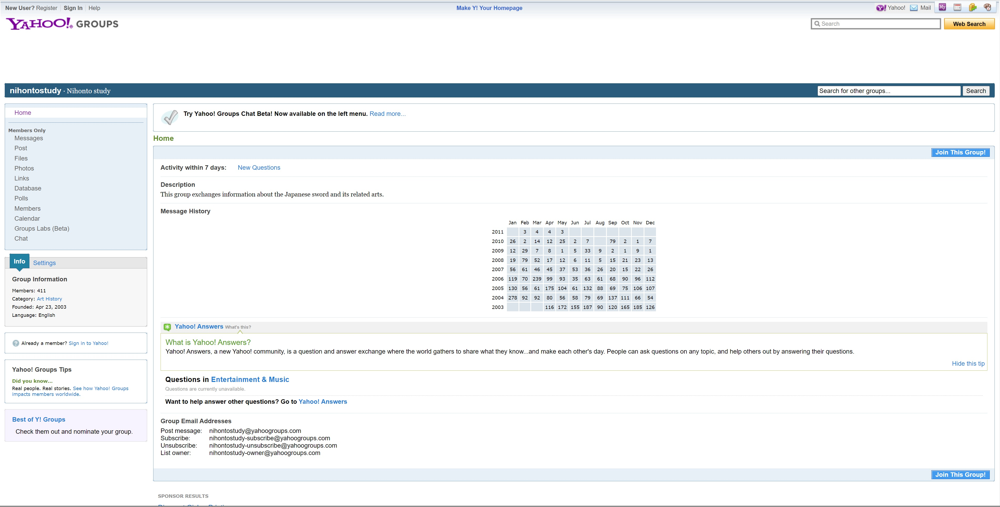
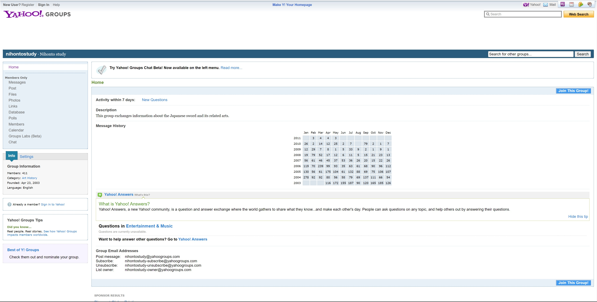

This was archived from http://groups.yahoo.com/group/nihontostudy/, a Yahoo! Group that is now defunct. I am not affiliated with that group. The goal of this site is to preserve all the useful information from the discussions and make it accessible again.
| advanced | |
 
